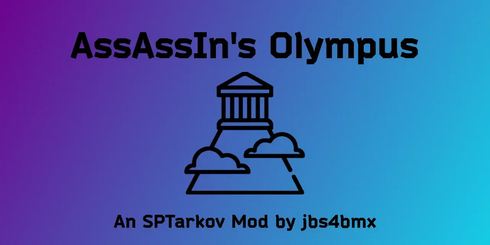

Olympus
- Downloads
- 2,339
- Favourites
- 6
- Mod lists
- 1

Zeus grants you access to enhanced mags, meds, and gear for your quests.
Hestia’s selflessness provides you the courage and power to smite your enemies. Hera, Poseidon, Demeter, Athena, Apollo, Artemis, Ares, Hephaestus, Aphrodite, Hermes, and Dionysus rally you on as you storm into battle.
This is a re-worked version of AssAssIn’s Olympus mod for SPT.
The mod will now be under the new name “Mount Olympus” in preparation for planned future changes.
This mod adds rigs, armor, a helmet, a backpack, stimulants, and magazines with OP properties.
The items are all sold by Therapist, Ragman, or Jaeger depending on what type of item they are.
NOTICE! Should AssAssIn ever want to take back control of this mod, he is more than welcome to do so.
Until then, I will do my best to maintain it and keep it updated.
To see more details about this mod, check out the GitHub page here
Incompatibility:
- SPT Realism Mod by Fontaine
- Algorithmic Level Progression by DewardianDev –> Overrides blacklist option of this mod.
- FIKA - No; I will not be adding it in the future.
Extract the contents of the zip file to the “root” of your SPT folder.
- The same location as ‘EscapeFromTarkov.exe’.
Edit the configuration file to your desired state.
Step 1: Remove any and all MountOlympus items from your inventory.

Step 2: Exit the game. Before logging out, Clean your temp files via the Launcher.
Step 3: Delete ‘MountOlympus’ folder from ‘mods’ folder.
Mod Source - Olympus: Github
Compatibility with other mods is neither expressed nor implied. (Attempts will be made to correct this, but cannot be guaranteed.)
Support is at the discretion of the creator and is neither implied nor guaranteed. Support is provided on a “best effort” basis.
If you would like to report an issue, please keep the report short and concise. You may report issue on GitHub.
- Reporting of issues is okay.
- Reporting on mod incompatibility is okay.
- Complaining about how the mod functions, whether good or bad, is NOT okay.
- Be civil or you will be ignored.
This is definitely not required and you have every right to ignore this tab, but if you would still like to buy me a coffee, I’d greatly appreciate it. Any and all proceeds will go towards further development/maintenance of mods.
Version
4.0.11
Yeah… it’s finally finished. For now, it’s written in a way that doesn’t require WTT-CommonLib, but I may change that in the future. I’m still debating that.
Changes
This release is completely refactored in C# for compatibility with the current SPT release. This release is focused on stability, consistency, and long‑term maintainability. This release will be considered an LTS release and will be supported until end of life has been determined.
Type: LTS (Long-Term Support) Release Date: January 27, 2026 Title: The Olympians Update
🛠 Overall Changes
- Renamed mod folder to
Mount Olympusin preparation for future releases. - Structured to allow for easy addition of new items or modification of current ones.
✨ Major Improvements
- Fully modularized much of the item logic using dedicated helper classes.
- Refactored all logic related to stimulator buffs to ensure consistent functionality.
- Greatly improved maintainability, auditability, and future‑proofing.
⚡ Item Additions/Changes
- Updated Apollo’s stimulant items with configurable properties.
- New Ares’ magazine items with configurable properties.
- Multiple armor/rig options with configurable properties.
- Seamless item addition to trader assorts. Therapist, Ragman, and Jaeger are used for this mod.
- Global buff list remains a json file for future upgradability and easy modification.
- Optional debug logging throughout initialization pipeline
- Magazines are now tiered behind trader loyalty levels with Jaeger. As your loyalty increases, so do the rewards.
🧼 Configuration Changes
- MOConfig.jsonc is the new config file name.
- Fully reworked and organized.
- Improved in-file documentation to describe the available configuration options.
📜 Logging & Diagnostics
- Added debug option in config for better troubleshooting.
🔮 Future‑Proofing
- LTS version will be supported until end of life has been determined.
- Set up to easily allow for implementation of planned future changes.
🚧 Under Construction
- Item blacklisting is still a work in progress and may not function correctly.
- Only stim use time is functional. Other Stim configuration options are WIP.